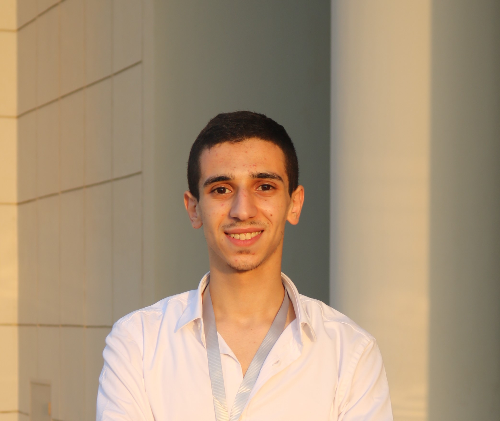

Open for Collaboration
Ibrahim
Abdellatif
Robotics researcher specialising in sensor fusion, state estimation, and SLAM. Incoming PhD student at SAFiR Lab, focused on graph-based approaches for multi-robot systems.

About
I am an incoming PhD student at the SAFiR Lab, Université de Sherbrooke, under Prof. Louis Petit, where my research will focus on graph-based SLAM and multi-robot collaborative control and planning.
I hold an MSc in Autonomous Vehicles Engineering from the University of Naples Federico II. My master's thesis — conducted at Smart Mechatronics and Robotics Research Group (SMART) at Saxion University of Applied Sciences in collaboration with Demcon Defense & security systems, RIWO and PRISMA Lab at University of Naples Federico II — compared EKF/UKF filter and factor graph-based approaches for multi-sensor robot pose estimation.
Before that, I completed a BSc in Mechanical Engineering (Mechatronics Track) at Nile University, Egypt, where my graduation project built a 12-DOF quadruped robot controlled through hierarchical RL (ARS and PPO). As Vice President of the RPM NU robotics club, I led the first MENA team to reach the finals of the NASA CanSat Competition (2023).
Research interests
Education
MSc in Industrial Engineering
University of Naples Federico II, Italy
Major in Autonomous Vehicles Engineering. Grade: 26/30 (DSU scholarship).
Thesis: Quantitative comparison of EKF/UKF vs. factor graph-based sensor fusion for mobile robot pose estimation (Erasmus-funded, Saxion UAS).
BSc in Mechanical Engineering
Nile University, Egypt
Major in Mechatronics, Robotics and Automation. GPA: 3.49 / 4.0 — Dean's List (Fall 2023).
Graduation project: Intelligent motion control of a 12-DOF quadruped robot using hierarchical control and RL (grade: A+).
Experience
Research Intern — Master's Thesis
SMART Mechatronics & Robotics Research Center, Saxion UAS, Netherlands
The project is on sensor fusion for robust state estimation of a mobile ground robot. The aim of project is to explore possibilities of factor graph-based sensor fusion for state estimation. The goal is to fuse wheel encoders, IMU and GNSS; Also, perform quantitative comparison of EKF/UKF filter vs. factor graph-based approach, the project is in collaboration with Demcon Defense & Security systems and RIWO company.
R&D Engineering Intern
Orange Digital Center Egypt, Orange Group, Cairo
Research and Development Engineering Intern July 2023 – Nov 2023 1) Technical and R&D: Assisting in design and prototyping, Fabrication and operation of machines, and Material preparation and management. 2) Education: Preparing for the Re-imagine Your City program, instructing a 2-day workshop under the " Introduction to Electronics" theme, facilitating technical 3D printing and laser cutting workshops, and acting as a mentor in the Re-imagine Your City program. 3) Project Management: Support in building Databases for ongoing programs, Assisting in Data Entry and Data cleaning, and Assisting in Inventory and Machines Management.
Volunteering
ADCS Member
IGNIS CubeSat Project, UNINA
Designed the ADCS for a CubeSat funded by UNINA and ESA.
Vice President
RPM NU Robotics Club, Nile University
Led NASA CanSat 2023 team — first MENA team to reach the finals (top 40 of 6,500+ participants).
Publications
Dynamic Modelling and Kinematic Verification for Quadruped Robot
International Journal of Intelligent Robotics and Applications — Journal Article
doi:10.1007/s41315-025-00472-0Innovations in 3D Printing-Assisted Biopolymers for Biomedical Applications
Sustainable 3D Printing for Innovative Biopolymer Production and Applications, ch. 5 — Wiley (Book Chapter)
Optimization of Solar Tree Performance in Egypt: A Simulation-Based Investigation
SN Applied Sciences, vol. 5, iss. 12, art. 369 — Springer
doi:10.1007/s42452-023-05575-6Modelling and Control of a Self-Balancing Robot Using Sensor Fusion and LQR Controller
4th NILES Conference — IEEE
doi:10.1109/NILES56402.2022.9942364Skills
Robotics & Frameworks
- ROS / ROS2
- Gazebo
- FUSE (factor graph)
- robot_localization
- Slamtec
Programming
- Python
- C / C++
- MATLAB / Simulink
- LaTeX
Algorithms
- EKF / UKF
- Factor Graph Optimization
- SLAM
CAD & Hardware
- SolidWorks
- AutoCAD
- Proteus / EasyEDA
- 3D Printing / Laser Cutting
Languages
- Arabic (native)
- English (fluent)
- Italian (beginner)